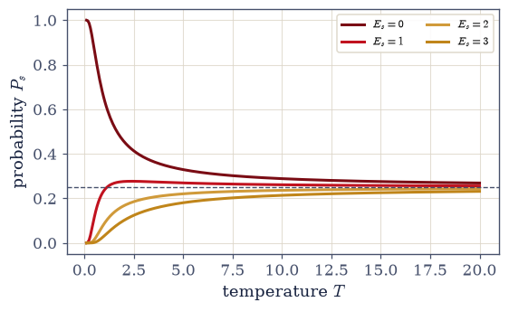
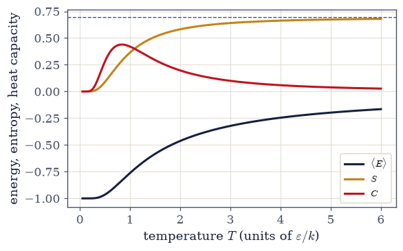
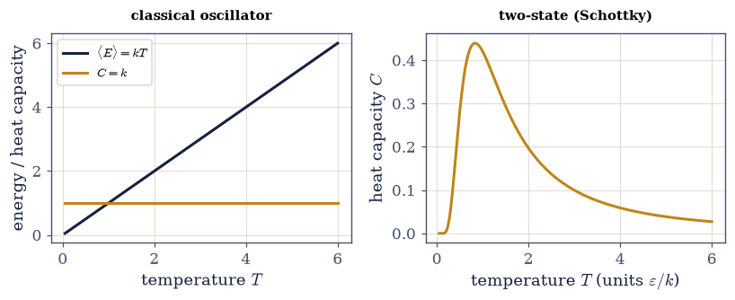
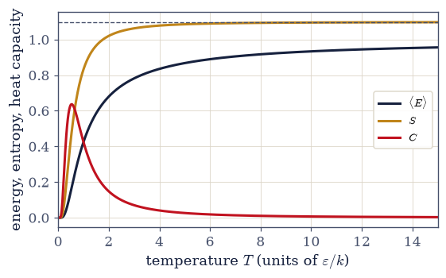
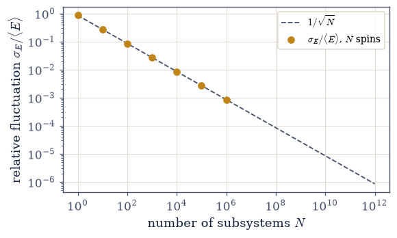
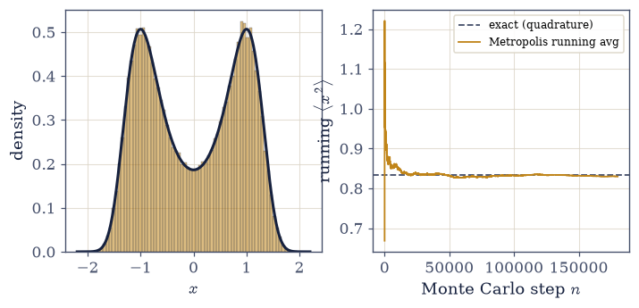
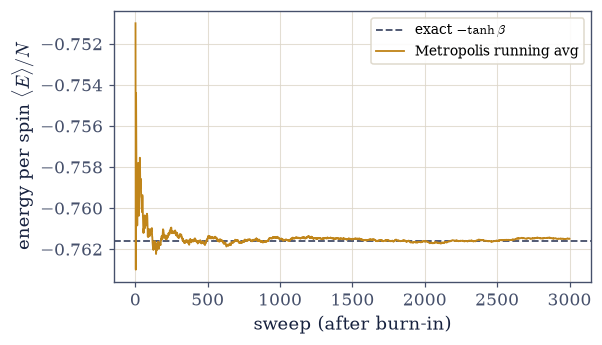

5.8 The Partition Function and the Canonical Ensemble#
Notebook overview#
§5.4 ended with the Boltzmann distribution: a system in contact with a reservoir at temperature \(T\) occupies a microstate of energy \(E_s\) with probability \(\propto e^{-\beta E_s}\), where \(\beta=1/kT\). That left one loose end — the normalization — and this notebook is about discovering that the loose end is the most important object in the subject. The normalizer is the partition function \(Z=\sum_s e^{-\beta E_s}\), and the thesis here is simple and far-reaching: once you have \(Z\), every thermodynamic quantity is a derivative of \(\ln Z\). Energy, heat capacity, entropy, free energy — the whole of equilibrium thermodynamics — follows from one sum by differentiation. Give me \(Z\) and I will give you the thermodynamics; everything else in this volume is the problem of finding \(Z\).
We build the machinery on two systems we can solve exactly, so every claim is checkable. The two-state spin — a dipole that points with or against a field, energies \(\pm\varepsilon\) — gives the cleanest possible \(Z=2\cosh\beta\varepsilon\), and from it the famous Schottky bump in the heat capacity and an entropy that climbs from \(0\) to \(k\ln2\). The classical harmonic oscillator gives the continuous case: its partition function is a Gaussian phase-space integral, \(Z=kT/\hbar\omega\), and from it equipartition falls out exactly — \(\langle E\rangle=kT\), one \(\tfrac12kT\) for the kinetic energy and one for the potential, with a constant heat capacity \(C=k\). Then we watch \(Z\) factorize for independent subsystems, \(Z_N=(Z_1)^N\), the bridge from a single degree of freedom to bulk matter that the ideal gas of §5.6 relied on.
Three further threads complete the canonical picture. The energy fluctuations of a system at fixed temperature turn out to be a second derivative of \(\ln Z\) — and to equal the heat capacity, \(\operatorname{Var}(E)=kT^2C_V\): the response function of §5.7 and the fluctuation are the same number, one of the deepest identities in the subject. Those fluctuations shrink as \(1/\sqrt N\) (the result of §5.3 returning), so the canonical ensemble of this notebook and the microcanonical ensemble of §5.4 agree in the thermodynamic limit — the first half of the equivalence of ensembles. And because most partition functions cannot be summed in closed form (the two-state spin and the oscillator are solvable luxuries), we develop the Metropolis algorithm, which samples the Boltzmann distribution directly and is checkable here against the exact answers — the tool that will make the interacting Ising model of §5.10 computable.
The arsenal is load-bearing throughout, and we flag it: \(Z\) sums the Boltzmann factor whose reservoir derivation in §5.4 fixed \(\beta=\partial S_{\rm res}/\partial E\); we work with \(\ln Z\) for the log-space reasons of §5.3; and the two-state and oscillator systems are the same ones we counted in §5.1 and §5.4. Where the microscopic counting meets the macroscopic thermodynamics the reader may already know — \(F\), \(S\), and the thermodynamic relations — we thread the connection in prose, but the development stays computation-first.
A word on scope, because it matters here. This is classical statistical mechanics; quantum mechanics is not built until Volume VI. So we use the classical oscillator — continuous energy, a Gaussian integral — and not the quantized one. The quantum oscillator, with its Einstein heat capacity and its Bose occupation factor, belongs to Volume VII, once Volume VI has justified where quantized levels come from; we point there once and develop none of it here. The two-state system is fair game, since “a system with two energy levels” is an ordinary classical modelling assumption.
These are equilibrium thermodynamic curves, so there is nothing to animate; the figures are clean stills — the Schottky bump, the equipartition line, the three-level thermodynamics.
How to read the checks. Each exercise closes with a
validatecall against an independent fact: normalized Boltzmann probabilities; \(\langle E\rangle=-\partial\ln Z/ \partial\beta\); the two-state \(\langle E\rangle=-\varepsilon\tanh\beta\varepsilon\) and the Schottky peak at \(T\approx0.834\varepsilon\); the classical oscillator \(Z=kT/\hbar\omega\) and equipartition \(\langle E\rangle=kT\), \(C=k\); the factorization \(\ln Z_N=N\ln Z_1\); the three-level entropy running to \(k\ln3\). A ✓ is strong evidence; a ✗ is a prompt to locate the discrepancy, not a verdict.Scope. The partition function and the canonical ensemble, classically — including its energy fluctuations and the Metropolis algorithm. The ideal gas was §5.6; the grand canonical ensemble and the equivalence of ensembles are §5.9, and the Ising phase transition §5.10. See Schroeder, An Introduction to Thermal Physics; Kardar, Statistical Physics of Particles; and §5.4 (the Boltzmann distribution and \(\beta\)), §5.3 (log space).
Theory in brief#
The canonical ensemble and the partition function#
A system in contact with a reservoir at temperature \(T\) (the canonical ensemble) occupies microstate \(s\) with the Boltzmann probability of §5.4,
The normalizer \(Z\) is the partition function. It looks like bookkeeping; it is the master object of the subject.
Energy as a derivative of ln Z#
The average energy is the cleanest illustration of the thesis,
The free energy, and all of thermodynamics#
The Helmholtz free energy is the master potential of the canonical ensemble,
Energy, entropy, free energy, and heat capacity — all of equilibrium thermodynamics — are derivatives of \(\ln Z\). This is where the macroscopic thermodynamics of \(F\) and \(S\) emerges from microscopic counting. In particular \(F=-kT\ln Z\) is the very Helmholtz free energy that §5.7 built abstractly by Legendre-transforming \(U(S)\to F(T)\): thermodynamics defined \(F\) structurally, and statistical mechanics computes it from the microscopics here.
The two-state system and the classical oscillator#
Two exactly-solvable systems carry the notebook. A spin with energies \(\pm\varepsilon\) gives
with a Schottky heat-capacity bump and \(S:0\to k\ln2\). The classical oscillator, \(E=p^2/2m+\tfrac12 m\omega^2x^2\) with continuous energy, has the phase-space partition function
a product of two Gaussian integrals.
Equipartition and factorization#
From the oscillator’s \(Z\), \(\langle E\rangle=kT\) — one \(\tfrac12kT\) per quadratic term — the equipartition theorem,
exact classically. And for \(N\) independent subsystems the energies add, so the partition function multiplies,
making \(\ln Z\), \(\langle E\rangle\), \(S\), and \(F\) all extensive — the bridge to bulk matter.
Energy fluctuations, and the equivalence of ensembles#
A system at fixed temperature does not have a fixed energy — it trades energy with the reservoir, and its energy fluctuates. The size of those fluctuations is, once again, a derivative of \(\ln Z\),
The middle equality is just the second derivative of \(\ln Z\); the last is the fluctuation–response identity — the energy variance equals the heat capacity (a response function of §5.7) times \(kT^2\). Response and fluctuation are one quantity. And the relative fluctuation \(\sigma_E/\langle E\rangle\sim1/\sqrt N\) vanishes for large \(N\) (the \(1/\sqrt N\) of §5.3), so the canonical ensemble (fixed \(T\), fluctuating \(E\)) and the microcanonical ensemble of §5.4 (fixed \(E\)) agree in the thermodynamic limit — the first half of the equivalence of ensembles (the second half, particle-number fluctuations, is §5.9).
Sampling Z: the Metropolis algorithm#
Summing \(Z\) in closed form, as we do for the spin and the oscillator, is a luxury: for almost any interacting system the sum over states is astronomically large and cannot be done. The escape is to sample. We want averages \(\langle A\rangle=\sum_s A_s e^{-\beta E_s}/Z\); rather than evaluate the intractable sum, we draw states with probability \(\propto e^{-\beta E_s}\) and average \(A\) over the draws (importance sampling — the Monte Carlo of §5.1–§5.3, now aimed at the Boltzmann distribution). The Metropolis algorithm builds such a sample from detailed balance: propose a small change and accept it with probability \(\min(1,e^{-\beta\Delta E})\). Because the ratio of forward to reverse acceptance is then exactly the Boltzmann ratio \(e^{-\beta\Delta E}\), the Boltzmann distribution is left stationary, and a long run visits each state with its canonical weight. We check it against the exact answers it must reproduce.
Setup#
import matplotlib.pyplot as plt
import numpy as np
from scipy import integrate
from scipy.special import gammaln, logsumexp
from ecp import draw, validate
ACCENT, INK, SOFT = draw.ACCENT, draw.INK, draw.SOFT
RED = "#c1121f"
# Units throughout: k = ℏ = ω = m = 1, and ε = 1 for the two-state gap; h = 2π.
# Temperatures and energies are then pure numbers (energy in units of ε or ℏω).
def two_state(T, eps=1.0):
"""Canonical thermodynamics of a single two-state spin (energies ±ε) (eq-two-state).
Returns the partition function Z = 2 cosh(βε) and everything that follows from
it by differentiation: the average energy −ε tanh(βε), the Helmholtz free energy
−kT ln Z, the entropy (⟨E⟩ − F)/T, and the (Schottky) heat capacity. The classical
model of a dipole that points two ways.
Parameters
----------
T : float or numpy.ndarray
Temperature (units of ε/k, with k = 1).
eps : float, optional
Half the level splitting (default ``1.0``).
Returns
-------
dict
``{"Z", "E", "F", "S", "C"}`` with the partition function and derived thermodynamics.
"""
beta = 1.0 / T
Z = 2.0 * np.cosh(beta * eps)
E = -eps * np.tanh(beta * eps)
F = -T * np.log(Z)
S = (E - F) / T
C = (eps / T) ** 2 / np.cosh(beta * eps) ** 2 # = dE/dT, the closed form
return {"Z": Z, "E": E, "F": F, "S": S, "C": C}
def oscillator(T):
"""Canonical thermodynamics of a single CLASSICAL harmonic oscillator (eq-sho).
Continuous energy E = p^2/2m + (1/2) m ω^2 x^2; the partition function is the Gaussian
phase-space integral Z = kT/ℏω (here = T). Equipartition then gives ⟨E⟩ = kT exactly
and a constant heat capacity C = k. The *quantum* oscillator (quantized levels, the
Einstein heat capacity, the Bose factor) is deferred to Volume VII.
Parameters
----------
T : float or numpy.ndarray
Temperature (units of ℏω/k, with k = ℏ = ω = 1).
Returns
-------
dict
``{"Z", "E", "F", "S", "C"}`` for the classical oscillator.
"""
Z = T # = kT/(ℏω) in these units
E = T # equipartition: ½kT (kinetic) + ½kT (potential)
F = -T * np.log(Z)
S = (E - F) / T
C = np.ones_like(np.asarray(T, dtype=float)) # constant, = k
return {"Z": Z, "E": E, "F": F, "S": S, "C": C}
def metropolis_double_well(beta, n_steps, step, rng, x0=0.0):
"""Sample the Boltzmann distribution ∝ e^(−βV) of the double well V(x) = (x^2 − 1)^2.
Runs the Metropolis algorithm: each step proposes a uniform local move x → x + δ (with
δ uniform on [−step, step]) and accepts it when
``rng.random() < np.exp(-beta*dV)`` — the acceptance min(1, e^(−βΔV)) built from
detailed balance. After the initial transient the chain is distributed as the canonical
e^(−βV)/Z, with no need to compute Z.
Parameters
----------
beta : float
Inverse temperature 1/kT.
n_steps : int
Number of Metropolis steps.
step : float
Half-width of the uniform proposal distribution.
rng : numpy.random.Generator
Random generator (``numpy.random.default_rng``).
x0 : float, optional
Starting position (default ``0.0``).
Returns
-------
numpy.ndarray
The chain of sampled positions, length ``n_steps``.
"""
def V(x):
return (x * x - 1.0) ** 2
x = x0
chain = np.empty(n_steps)
for i in range(n_steps):
x_prop = x + rng.uniform(-step, step) # uniform local proposal
if rng.random() < np.exp(-beta * (V(x_prop) - V(x))): # Metropolis acceptance
x = x_prop
chain[i] = x
return chain
Exercise 1 — The partition function and the Boltzmann probabilities#
We pick up exactly where §5.4 left off. A system with energy levels \(E_s\) in contact with a reservoir at temperature \(T\) occupies level \(s\) with probability \(P_s=e^{-\beta E_s}/Z\), and the normalizer is the partition function \(Z=\sum_s e^{-\beta E_s}\) Eq. 333. The division by \(Z\) is the only thing §5.4 left implicit, and it is forced: the probabilities must sum to one, so \(Z\) is whatever makes them. Watching \(P_s\) as we change temperature shows the physics: when it is cold (\(\beta\) large) the system sits in its ground state; when it is hot (\(\beta\to0\)) every level becomes equally likely (Fig. 372).
This exercise (worked). For a small system with energies \(0,1,2,3\) (in units of
\(\varepsilon\)), compute \(Z=\sum_s e^{-\beta E_s}\) as a numpy sum and the probabilities
\(P_s=e^{-\beta E_s}/Z\); confirm \(\sum_s P_s=1\), and that the ground state dominates as \(T\to0\)
while the distribution becomes uniform as \(T\to\infty\). This is the Boltzmann distribution of
§5.4, now normalized by \(Z\).
T= 0.3: Z = 1.0370, P = [0.964 0.034 0.001 0. ], ΣP = 1.000000
T= 1.0: Z = 1.5530, P = [0.644 0.237 0.087 0.032], ΣP = 1.000000
T=100.0: Z = 3.9407, P = [0.254 0.251 0.249 0.246], ΣP = 1.000000
Validation 1#
✓ the Boltzmann probabilities are normalized by the partition function [got 1 vs expected 1 (rtol=1e-12)]
✓ the ground state dominates as T→0 and the levels become equally likely as T→∞
True

Fig. 372 The Boltzmann probabilities \(P_s=e^{-\beta E_s}/Z\) for a four-level system (energies \(0,1,2,3\)) across temperature. At low \(T\) (left) the ground state holds essentially all the probability; as \(T\) rises, higher levels fill, and as \(T\to\infty\) all four become equally likely at \(P=1/4\) (dashed). The partition function \(Z\) is the normalizer that makes \(\sum_s P_s=1\) at every temperature — and, it turns out, far more than that.#
Exercise 2 — Energy as a derivative of ln Z#
Here is the master trick, the one that makes \(Z\) worth obsessing over. The average energy can be obtained two ways. The obvious way is the direct sum \(\langle E\rangle=\sum_s E_sP_s\). The powerful way is to notice that differentiating \(\ln Z\) with respect to \(\beta\) pulls down exactly the factor of \(-E_s\) needed, so \(\langle E\rangle=-\partial\ln Z/\partial\beta\) Eq. 334. The second form is the template for everything that follows: a thermodynamic quantity is a derivative of \(\ln Z\). We will not have to invent a new calculation for energy, then another for entropy, then another for heat capacity — we differentiate the same \(\ln Z\).
This exercise (worked). For the four-level system of Exercise 1, compute \(\langle E\rangle\)
both by the direct sum \(\sum_s E_sP_s\) (a numpy weighted sum) and by \(-\partial\ln Z/\partial
\beta\) (a numerical derivative with numpy.gradient over a \(\beta\) grid), and confirm the two
agree across temperature.
comparing ⟨E⟩ from −∂ln Z/∂β with the direct sum Σ E_s P_s:
β=0.2: −∂lnZ/∂β = 1.2543, Σ E_s P_s = 1.2543
β=1.0: −∂lnZ/∂β = 0.5071, Σ E_s P_s = 0.5071
β=3.0: −∂lnZ/∂β = 0.0524, Σ E_s P_s = 0.0524
Validation 2#
✓ the average energy equals −∂ln Z/∂β (and the direct sum agrees) [max|Δ| = 9.5855e-06 (rtol=0.001, atol=1e-09)]
True
Exercise 3 — The two-state paramagnet#
The cleanest complete example of the \(Z\) machinery is a single spin in a magnetic field, with just two energies, \(-\varepsilon\) (aligned) and \(+\varepsilon\) (anti-aligned). The partition function is a two-term sum, \(Z=e^{\beta\varepsilon}+e^{-\beta\varepsilon}=2\cosh\beta \varepsilon\) Eq. 336, and from this one expression everything follows by the rules of Eq. 335. The average energy is \(\langle E\rangle=-\varepsilon\tanh\beta \varepsilon\), rising from \(-\varepsilon\) (fully aligned, cold) toward \(0\) (equally split, hot). The free energy is \(F=-kT\ln Z\). The entropy, \(S=(\langle E\rangle-F)/T\), climbs from \(0\) at \(T=0\) — where the spin is frozen into one state, a single microstate — to \(k\ln2\) at high \(T\), where both states are equally likely (Fig. 373). And the heat capacity has a characteristic bump, which the next exercise dissects.
This exercise (worked). Using the two_state helper, compute \(\langle E\rangle\), \(C\), \(S\),
and \(F\) across temperature, confirm \(\langle E\rangle=-\varepsilon\tanh\beta\varepsilon\) and
that the entropy approaches \(k\ln2\) at high temperature, and plot the thermodynamics.
two-state spin (ε=1):
⟨E⟩(T=2) = -0.4621 vs −ε tanh(βε) = -0.4621
S(T=500) = 0.6931 vs k ln 2 = 0.6931
S(T→0) = 0.0000 (frozen: one microstate)
Validation 3#
✓ the two-state energy is −ε tanh(βε) [got -0.462117 vs expected -0.462117 (rtol=1e-06)]
✓ the two-state high-temperature entropy is k ln 2 (both states equally likely) [got 0.693145 vs expected 0.693147 (rtol=0.001)]
True

Fig. 373 The complete thermodynamics of a two-state spin (energies \(\pm\varepsilon\)), all derived from \(Z=2\cosh\beta\varepsilon\). The energy \(\langle E\rangle\) (dark) rises from \(-\varepsilon\) to \(0\); the entropy \(S\) (amber) climbs from \(0\) (frozen ground state) to \(k\ln2\) (dashed, both states filled); and the heat capacity \(C\) (red) shows the Schottky bump — a maximum near \(T\approx0.83\varepsilon\) where thermal energy first excites the upper level, then a fall as the level saturates. Every curve is a derivative of one \(\ln Z\).#
Exercise 4 — The Schottky anomaly#
The bump in the heat capacity deserves a closer look, because it is a real and recognisable signature. The heat capacity \(C=\partial\langle E\rangle/\partial T\) measures how much energy the system soaks up per degree of warming. For a two-level system it is small at both extremes: when it is very cold, there is not enough thermal energy (\(kT\ll\varepsilon\)) to excite the upper level, so warming does almost nothing; when it is very hot, both levels are already nearly equally occupied and saturated, so warming again does little. In between, where \(kT\sim\varepsilon\), the upper level fills rapidly with temperature and the system drinks up energy — the Schottky anomaly, a maximum at \(T\approx0.834\varepsilon\) (Fig. 373). Note what it is not: a divergence. A finite system has no phase transition; the heat capacity stays finite and smooth. A genuine divergence requires the thermodynamic limit and cooperative interactions, which we reach only at the Ising capstone (§5.10).
This exercise (worked). Locate the heat-capacity maximum of the two-state system with
numpy.argmax and confirm it sits at \(T\approx0.834\varepsilon\); contrast the finite bump with
the divergence a true phase transition would show.
Schottky heat-capacity peak at T = 0.833 ε (≈ 0.834 ε)
peak height C_max = 0.4392 k (finite — no phase transition)
Validation 4#
✓ the two-level heat capacity peaks at T ≈ 0.834 ε (the Schottky anomaly) [got 0.833267 vs expected 0.834 (rtol=0.02)]
True
Exercise 5 — The classical harmonic oscillator: Z by phase-space integral#
Now the continuous case, and the one that powers the rest of classical thermodynamics. A particle in a quadratic potential has energy \(E=p^2/2m+\tfrac12 m\omega^2x^2\), and — this is the classical oscillator — its energy is continuous, taking any value, with no quantized levels. (Quantized levels are the subject of Volume VII, once Volume VI builds the quantum mechanics that justifies them; here, in a classical volume, we use the classical oscillator.) So the sum over states becomes an integral over phase space, \(Z=\frac1h\iint e^{-\beta E}\, dx\,dp\) Eq. 337, with the \(1/h\) making \(Z\) dimensionless. Because the energy is a sum of two squares, the double integral factors into two Gaussian integrals, each of the standard form \(\int_{-\infty}^{\infty}e^{-au^2}\,du=\sqrt{\pi/a}\):
Their product over \(h\) is \(Z=\frac1h\cdot\frac{2\pi}{\beta\omega}=\frac{kT}{\hbar\omega}\) (using \(h=2\pi\hbar\)). The partition function is simply proportional to temperature.
This exercise (worked). Confirm the closed form against a direct numerical evaluation of the
two-dimensional phase-space integral with scipy.integrate.dblquad (in units \(\hbar=\omega=k=
m=1\), so \(h=2\pi\) and the answer is \(Z=T\)), at a stated temperature.
classical oscillator at T=2.0 (ℏ=ω=k=m=1, h=2π):
Z (numerical phase-space integral) = 2.00000
Z = kT/ℏω = T = 2.00000
Validation 5#
✓ the classical oscillator partition function is kT/ℏω (= T in these units) [got 2 vs expected 2 (rtol=0.0001)]
True
Exercise 6 — Equipartition from the oscillator#
With \(Z=kT/\hbar\omega\) in hand, the master trick delivers a famous result with no effort. The average energy is \(\langle E\rangle=-\partial\ln Z/\partial\beta\), and since \(\ln Z=-\ln\beta- \ln(\hbar\omega)\), the derivative is \(\langle E\rangle=1/\beta=kT\) Eq. 338 — exactly, at every temperature. Read it as two halves: \(\tfrac12kT\) from the kinetic term \(p^2/2m\) and \(\tfrac12kT\) from the potential term \(\tfrac12m\omega^2x^2\), one \(\tfrac12kT\) for each quadratic degree of freedom. This is the equipartition theorem, and it generalizes directly: \(f\) quadratic degrees of freedom give \(\langle E\rangle=\tfrac{f}{2}kT\). A free particle in one dimension (\(p^2/2m\), \(f=1\)) has \(\tfrac12kT\); in three dimensions (\(f=3\)), \(\tfrac32kT\) — the result that builds the ideal gas in §5.6. The heat capacity is then a constant, \(C=\partial\langle E\rangle/\partial T=k\), with no temperature dependence at all — the hallmark of the classical, unbounded spectrum, in sharp contrast to the two-state system, whose bounded spectrum makes \(C\) rise, peak, and freeze out (Fig. 374).
This exercise (worked). From the oscillator helper confirm \(\langle E\rangle=kT\) and
\(C=k\) exactly; verify \(\langle E\rangle=kT\) independently with a direct phase-space average of
the energy (scipy.integrate.dblquad); and contrast the constant oscillator heat capacity with
the two-state Schottky bump.
classical oscillator at T=2.0:
⟨E⟩ = kT = 2.00000 (direct phase-space average = 2.00000)
C = k = 1.00000 (constant — no temperature dependence)
equipartition: ⟨E⟩ = (f/2)kT — free particle 1D gives ½kT, 3D gives 3/2 kT (→ ideal gas, 5.6)
Validation 6#
✓ the classical oscillator obeys equipartition exactly: ⟨E⟩ = kT and C = k [max|Δ| = 0 (rtol=0.0001, atol=1e-09)]
✓ the direct phase-space average of the energy is also kT [got 2 vs expected 2 (rtol=0.001)]
True
findfont: Failed to find font weight 600, now using 700.

Fig. 374 Classical equipartition versus the Schottky bump. Left: the classical oscillator has \(\langle E\rangle=kT\) (a straight line through the origin) and a constant heat capacity \(C=k\) — its unbounded spectrum soaks up energy at the same rate forever. Right: the two-state system’s bounded spectrum gives instead the Schottky bump (amber), which freezes out at low \(T\) and saturates at high \(T\). The contrast is the difference between a bounded and an unbounded classical energy spectrum, and equipartition is the exact, quantum-free rule that builds the ideal gas.#
Exercise 7 — Factorization and extensivity#
One last structural fact turns single-particle thermodynamics into the thermodynamics of bulk matter. If a system is made of \(N\) independent subsystems, their energies add, \(E_{\rm total} =\sum_iE_i\), and because the Boltzmann factor of a sum is a product of Boltzmann factors, the partition function multiplies: \(Z_N=(Z_1)^N\) Eq. 339. Taking the logarithm turns the product into a sum, \(\ln Z_N=N\ln Z_1\), and since every thermodynamic quantity is a derivative of \(\ln Z\), all of them scale with \(N\): \(\langle E\rangle_N=N\langle E\rangle_1\), \(S_N=NS_1\), \(F_N=NF_1\). This is precisely why thermodynamic quantities are extensive, and it is the route from one degree of freedom to a mole.
This exercise (worked). For \(N\) independent two-state spins, confirm \(\ln Z_N=N\ln Z_1\) by
summing the composite spectrum directly — the \(N{+}1\) macrolevels \((2k-N)\varepsilon\) with
binomial degeneracies \(\binom{N}{k}\), in log space via scipy.special.logsumexp — and confirm
\(\langle E\rangle_N=N\langle E\rangle_1\) across temperature. Forward-pointer: for
indistinguishable particles (an ideal gas) a factor \(1/N!\) appears — the Gibbs correction,
rooted in the indistinguishability counting of §5.1 — which we take up in §5.6.
1000 independent two-state spins at T=1.5:
ln Z_1 = 0.9006, ln Z_N = N ln Z_1 = 900.63
⟨E⟩_1 = -0.5828, ⟨E⟩_N = N⟨E⟩_1 = -582.78
energy, entropy, and free energy all scale with N — thermodynamics is extensive
Validation 7#
✓ the degeneracy-weighted composite sum equals N ln Z_1 — factorization, genuinely tested [got 900.629 vs expected 900.629 (rtol=1e-09)]
True
Exercise 8 — A three-level system and reading off thermodynamics#
To drive home that the machinery is entirely general — sum the Boltzmann factor, then differentiate — we apply it to a system with three levels, energies \(0,\varepsilon,2\varepsilon\). There is nothing special about two levels; the recipe is the same. Build \(Z=1+e^{-\beta \varepsilon}+e^{-2\beta\varepsilon}\) by direct summation, and read off \(\langle E\rangle\), \(C\), \(S\), and \(F\) by the rules of Eq. 335. The entropy tells the story in its limits: at low temperature only the ground state is occupied, so \(S\to0\); at high temperature all three levels are equally likely, so \(S\to k\ln3\) (Fig. 375). Two levels gave \(k\ln2\), three give \(k\ln3\) — the high-temperature entropy is just the log of the number of accessible states, the counting of §5.1 once more.
This exercise (student). Build the three-level partition function by direct summation
(numpy.sum), compute \(\langle E\rangle\) (by \(-\partial\ln Z/\partial\beta\) with
numpy.gradient), \(C\), \(S\), and \(F\) across temperature, and confirm the entropy runs from \(0\)
to \(k\ln3\).
three-level system (0, ε, 2ε):
S(T=0.05) = 0.0000 (→ 0, frozen ground state)
S(T=30) = 1.0982 vs k ln 3 = 1.0986
Validation 8#
✓ the three-level entropy runs from 0 (frozen ground state) to k ln 3 (all levels equally likely) [max|Δ| = 0.000370452 (rtol=1e-06, atol=0.02)]
True

Fig. 375 The thermodynamics of a three-level system (energies \(0,\varepsilon,2\varepsilon\)), built by summing the Boltzmann factor and differentiating \(\ln Z\). The energy \(\langle E\rangle\) (dark) rises from \(0\) toward the mean level \(\varepsilon\); the entropy \(S\) (amber) climbs from \(0\) to \(k\ln3\) (dashed, all three levels equally likely); and the heat capacity \(C\) (red) shows a broadened Schottky-like bump as the two excited levels fill in turn. The same recipe, applied to any spectrum, yields all of equilibrium thermodynamics.#
Exercise 9 — Energy fluctuations: the response is the fluctuation#
We have treated the canonical energy as if it had a single value \(\langle E\rangle\), but a system at fixed temperature is exchanging energy with its reservoir, so its energy fluctuates from moment to moment. How large are those fluctuations? The answer is, once more, a derivative of \(\ln Z\) — and it hides a remarkable identity. The variance of the energy is the second derivative, \(\operatorname{Var}(E)=\partial^2\ln Z/\partial\beta^2\), which works out to \(\operatorname{Var}(E)=kT^2C_V\) Eq. 340. The right-hand side is the heat capacity — a response function (how much energy the system absorbs per degree, a second derivative of the free energy in §5.7). So the spontaneous fluctuation of the energy and the response to heating are the same number. This is the simplest case of the fluctuation–dissipation idea, one of the deepest in physics: a system’s jitter at equilibrium and its reaction to a push are two faces of one quantity. There is a second payoff. The relative fluctuation \(\sigma_E/\langle E\rangle\) shrinks as \(1/\sqrt N\) for \(N\) independent subsystems (the \(1/\sqrt N\) of §5.3), so at macroscopic \(N\) the energy is sharp to a part in \(10^{12}\): the canonical ensemble (fixed \(T\), fluctuating \(E\)) and the microcanonical ensemble of §5.4 (fixed \(E\)) become indistinguishable. That is the first half of the equivalence of ensembles.
This exercise (worked). Confirm the fluctuation–response identity \(\operatorname{Var}(E)=
kT^2C_V\) for both exactly-solved systems — the two-state spin (computing \(\operatorname{Var}(E)\)
directly from the Boltzmann probabilities) and the classical oscillator (computing it as a
phase-space Gaussian integral with scipy.integrate.dblquad, no closed form assumed) — and
measure the \(1/\sqrt N\) fall of the relative fluctuation by sampling \(N\)-spin energies
exactly with numpy.random.default_rng().binomial (Fig. 376).
two-state T=1.0: Var(E) = 0.419974 vs kT²C_V = 0.419974
oscillator T=1.0: Var(E) = 1.000000 vs kT²C_V = 1.000000
→ the energy fluctuation and the heat-capacity response are the same number
σ_E/⟨E⟩: N=1 → 0.851, N=10⁶ → 8.51e-04 (∝ 1/√N → canonical ≈ microcanonical)
Validation 9#
✓ the energy variance equals kT²C_V (fluctuation = response) [max|Δ| = 2.62768e-12 (rtol=0.001, atol=1e-09)]
✓ the sampled relative energy fluctuation falls as 1/√N — canonical ≈ microcanonical [got 10.0375 vs expected 10 (rtol=0.05)]
True

Fig. 376 Energy fluctuations vanish as \(1/\sqrt N\). The relative fluctuation \(\sigma_E/\langle E\rangle\) of \(N\) independent two-state spins against \(N\) (log–log, amber points), falling exactly along the \(1/\sqrt N\) line (dashed). At \(N=1\) the energy fluctuates by most of its value; by Avogadro’s number it is sharp to a part in \(10^{12}\). Because the fluctuation \(\operatorname{Var}(E)=kT^2C_V\) equals the heat-capacity response, and because it is negligible at macroscopic \(N\), the canonical ensemble (fixed \(T\), fluctuating \(E\)) and the microcanonical ensemble of §5.4 (fixed \(E\)) describe the same physics — the equivalence of ensembles.#
Exercise 10 — Metropolis: sampling \(Z\) when it cannot be summed#
The two-state spin and the oscillator let us write \(Z\) in closed form, but they are the exceptions. For almost any system worth simulating — interacting spins, dense fluids, polymers — the sum over states is astronomically large and there is no formula. The way out is not to compute \(Z\) at all, but to sample the Boltzmann distribution and average over the samples. The Metropolis algorithm does this with a rule built from detailed balance: from the current state, propose a small move, and accept it with probability \(\min(1,e^{-\beta\Delta E})\) — always downhill in energy, sometimes uphill, with the uphill odds set by the Boltzmann factor. A long run then visits each state with exactly its canonical weight \(e^{-\beta E}/Z\), without ever evaluating \(Z\). We test it on a particle in the double well \(V(x)=(x^2-1)^2\), whose partition function has no elementary closed form but whose canonical averages we can get to any precision by numerical quadrature — so the Monte Carlo answer is fully checkable (Fig. 377). The sampled distribution lands on \(e^{-\beta V}/Z\), the well occupation comes out symmetric, and the running average of \(\langle x^2\rangle\) converges to the exact value with the \(1/\sqrt N\) Monte Carlo error of §5.1–§5.3.
This exercise (worked). Sample the double well with metropolis_double_well (a uniform local
proposal and the acceptance test rng.random() < np.exp(-beta*dV)), and confirm the Metropolis
\(\langle x^2\rangle\) and the \(50/50\) well occupation match the exact canonical values from
scipy.integrate.quad.
Write this one yourself — the implementation is the lesson. (The propose–accept update is the method core of every Monte Carlo notebook from here to §7.21.)
double well V(x)=(x²−1)², β=1.0:
⟨x²⟩ Metropolis = 0.8295 vs exact (quadrature) = 0.8327
fraction in the left well = 0.4998 (exactly 0.5 by symmetry)
Validation 10#
✓ Metropolis samples the Boltzmann distribution: ⟨x²⟩ matches the exact canonical value [got 0.829509 vs expected 0.832745 (rtol=0.03)]
✓ the two wells are equally occupied — Metropolis respects the symmetry of the Boltzmann weight [got 0.499761 vs expected 0.5 (rtol=1e-06)]
True

Fig. 377 Metropolis sampling of a double well, checked against the exact answer. Left: the histogram of sampled positions (amber) lands on the canonical Boltzmann density \(e^{-\beta V}/Z\) (dark), peaked in the two wells of \(V(x)=(x^2-1)^2\) — and the sampler never computed \(Z\). Right: the running average \(\langle x^2\rangle(n)\) (amber) converges to the exact value from quadrature (dashed) with the \(1/\sqrt n\) Monte Carlo error of §5.1–§5.3. This checkability is the point: Metropolis is exact in the limit, and here we can prove it — the licence to trust it on the interacting Ising model of §5.10, where no exact answer exists.#
Exercise 11 — Metropolis for many spins, checked against the exact law#
One more check before we trust the method on a system we cannot solve. The double well was a single degree of freedom; a real simulation has many. We take \(N\) independent two-state spins — the same paramagnet whose thermodynamics we summed exactly above — and sample it with Metropolis: each sweep proposes flipping every spin and accepts each flip with the Boltzmann probability. Two things make this a clean test. First, the exact answers are known — \(\langle E\rangle/N=-\tanh \beta\varepsilon\) and \(\operatorname{Var}(E)/N=\operatorname{sech}^2\beta\varepsilon\) — so the sampler is graded against the truth. Second, because the spins do not interact, their flips are independent and can be proposed all at once (a vectorized sweep), which is fast and still exactly Metropolis. The Monte Carlo energy per spin and its variance per spin land on the exact canonical values (Fig. 378). The very same algorithm, with an interaction added so a spin’s acceptance depends on its neighbours, is what makes the Ising phase transition of §5.10 computable — there with no exact answer to check against, which is exactly why we validate the method here.
This exercise (worked). Sample \(N\) independent spins with a vectorized Metropolis sweep (the
per-spin acceptance rng.random(N) < np.exp(-beta*dE), numpy.random.default_rng), and confirm
\(\langle E\rangle/N\) and \(\operatorname{Var}(E)/N\) match the exact \(-\tanh\beta\) and
\(\operatorname{sech}^2\beta\).
N=2000 independent two-state spins, β=1.0:
⟨E⟩/N Metropolis = -0.7615 vs −tanh β = -0.7616
Var(E)/N Metropolis = 0.4227 vs sech²β = 0.4200
Validation 11#
✓ Metropolis reproduces the exact canonical ⟨E⟩ and Var(E) for independent spins [max|Δ| = 0.00272562 (rtol=0.15, atol=1e-09)]
True

Fig. 378 Metropolis for many spins, graded against the exact law. The running Monte Carlo estimate of the energy per spin \(\langle E\rangle/N\) (amber) converges to the exact canonical value \(-\tanh\beta\varepsilon\) (dashed) for \(N=2000\) independent two-state spins at \(\beta=1\). Because the spins do not interact, an entire sweep is one vectorized acceptance step — fast, and still exactly Metropolis. Validated here against a known answer, the algorithm is ready for the interacting Ising magnet of §5.10, where the sum defining \(Z\) is intractable and Monte Carlo is the only way through.#
Exercise 12 — Everything from ln Z, and the canonical ensemble entire#
Step back and take in what one object has done. We summed the Boltzmann factor once to form the partition function \(Z\), and from its logarithm came — by differentiation alone — the average energy (\(-\partial\ln Z/\partial\beta\)), the free energy (\(-kT\ln Z\), the Helmholtz potential of §5.7), the entropy, and the heat capacity: the whole of equilibrium thermodynamics, with no further physics input. The second derivative gave the energy fluctuations, \(\operatorname{Var}(E)= kT^2C_V\), revealing that the response function and the fluctuation are one quantity — and that those fluctuations vanish as \(1/\sqrt N\), so the canonical and microcanonical ensembles agree in the thermodynamic limit. And where \(Z\) cannot be summed, the Metropolis algorithm samples the Boltzmann distribution directly, checked here to the digit against the double well and the independent spins. The partition function is the master object of the subject; finding it — by exact summation, by fluctuation analysis, or by Monte Carlo when all else fails — is the rest of the volume.
This exercise. Close with the unifying check that the energy obtained by differentiating \(\ln Z\) agrees with the energy obtained by direct Boltzmann averaging, for both exactly-solved systems at once — the two-state spin and the classical oscillator — confirming that “differentiate \(\ln Z\)” and “average over the Boltzmann distribution” are one and the same.
at T=1.7, ⟨E⟩ by −∂lnZ/∂β vs by Boltzmann average:
two-state: -0.5286 vs -0.5286
oscillator: 1.7002 vs 1.7000
give me the partition function and I will give you the thermodynamics
Validation 12#
✓ differentiating ln Z and averaging over the Boltzmann distribution give the same energy [max|Δ| = 0.000163795 (rtol=0.005, atol=1e-09)]
True
Notebook summary#
The partition function \(Z\) is the master object of statistical mechanics: sum (or integrate) the Boltzmann factor of §5.4 once, and every thermodynamic quantity is a derivative of \(\ln Z\).
The partition function Eq. 333, Eq. 334: \(Z=\sum_s e^{-\beta E_s}\) normalizes the Boltzmann probabilities, and \(\langle E\rangle=-\partial\ln Z/\partial\beta\) (verified equal to the direct sum) is the template — thermodynamic quantities are derivatives of \(\ln Z\).
All of thermodynamics Eq. 335: \(F=-kT\ln Z\), \(S=(\langle E\rangle-F)/T\), \(C=\partial\langle E\rangle/\partial T\) — energy, entropy, free energy, heat capacity, by differentiation.
The two-state spin Eq. 336: \(Z=2\cosh\beta\varepsilon\), \(\langle E\rangle= -\varepsilon\tanh\beta\varepsilon\), the Schottky bump at \(T\approx0.834\varepsilon\) (a finite maximum, not a phase transition), and \(S:0\to k\ln2\).
The classical oscillator Eq. 337, Eq. 338: the Gaussian phase-space integral gives \(Z=kT/\hbar\omega\), hence equipartition exactly — \(\langle E\rangle=kT\) (\(\tfrac12kT\) per quadratic degree of freedom) and a constant \(C=k\), the quantum-free rule behind the ideal gas.
Factorization Eq. 339: \(Z_N=(Z_1)^N\), so \(\ln Z\) and all thermodynamics are extensive — the bridge to bulk matter (with the Gibbs \(1/N!\) of §5.6).
Energy fluctuations Eq. 340: \(\operatorname{Var}(E)=\partial^2\ln Z/\partial \beta^2=kT^2C_V\) — the fluctuation–response identity (verified for the spin and the oscillator), with \(\sigma_E/\langle E\rangle\sim1/\sqrt N\to0\), so the canonical and microcanonical ensembles agree (the equivalence of ensembles, first half).
Monte Carlo. The Metropolis algorithm samples \(e^{-\beta E}/Z\) from detailed balance when \(Z\) cannot be summed, checked to the digit against the double well (\(\langle x^2\rangle\)) and \(N\) independent spins (\(\langle E\rangle/N=-\tanh\beta\), \(\operatorname{Var}(E)/N= \operatorname{sech}^2\beta\)).
Give me \(Z\) and I will give you the thermodynamics — by exact summation, by its fluctuations, or, when the sum is intractable, by Monte Carlo.
Outlook#
The grand canonical ensemble and ensemble equivalence (§5.9). Let particle number fluctuate too: the grand partition function and the chemical potential, and the second half of the equivalence of ensembles — number fluctuations vanishing as \(1/\sqrt N\), completing the argument begun here.
The Ising model (§5.10). Interacting spins whose heat capacity genuinely diverges at a phase transition — the cooperative effect a single Schottky bump can only hint at, made computable by the very Metropolis algorithm validated here.
Production Monte Carlo (MMM). Autocorrelation, error bars, finite-size scaling, and cluster algorithms — the craft of extracting trustworthy numbers — are taken up in the Molecular & Materials Modelling course; here we established only the algorithm and its correctness.
Quantum statistics (Volume VII). The quantum oscillator’s Bose factor \(1/(e^{\beta\hbar \omega}-1)\), the Einstein heat capacity, and the Fermi–Dirac and Bose–Einstein distributions — once Volume VI justifies quantized levels. None of that is needed for the classical results here.
Cross-reference §5.4 (the Boltzmann distribution and \(\beta\)), §5.6 (the ideal gas built on the factorized \(Z\)), §5.7 (\(F=-kT\ln Z\) and the response functions), §5.3 (log space, \(1/\sqrt N\)), and the counting of §5.1.